Bem-vindo ao Estudo de Automação Industrial
Este site reúne os principais componentes utilizados em sistemas de automação e controle elétrico industrial. Aqui você vai encontrar explicações claras sobre o funcionamento, aplicações e características de cada elemento — desde dispositivos de proteção como disjuntores e relés, até elementos de comando como botoeiras e sensores. O conteúdo é voltado para estudantes e profissionais das áreas de eletrotécnica, mecatrônica e automação.
Componentes disponíveis
Disjuntor
Dispositivo de proteção que interrompe automaticamente o circuito em casos de sobrecarga ou curto-circuito.
Contator
Elemento eletromecânico responsável pelo acionamento de cargas elétricas de alta potência via comando elétrico.
Botão de Pulso
Dispositivo de comando manual que envia sinais momentâneos para acionar ou interromper circuitos industriais.
Chave Manopla
Interruptor rotativo utilizado para seleção de modos e controle manual em painéis elétricos industriais.
Sensor Fim de Curso
Detecta os limites de movimento de máquinas e equipamentos, garantindo segurança e controle de posição.
Motor Trifásico
Máquina que converte energia elétrica trifásica em movimento mecânico, base da maioria dos processos industriais.
Multímetro
Instrumento de medição elétrica capaz de verificar tensão, corrente e resistência em um único aparelho.
Relé Temporizador
Controla o acionamento e desligamento de circuitos com base em intervalos de tempo pré-programados.
Disjuntor Motor
Protetor específico para motores elétricos, combinando proteção termomagnética e acionamento direto.
Relé Térmico
Protege motores contra superaquecimento causado por sobrecarga elétrica prolongada, preservando o equipamento.
Principais Fabricantes do Setor
Disjuntor
Dispositivo de segurança eletromecânico projetado para proteger instalações elétricas contra falhas.
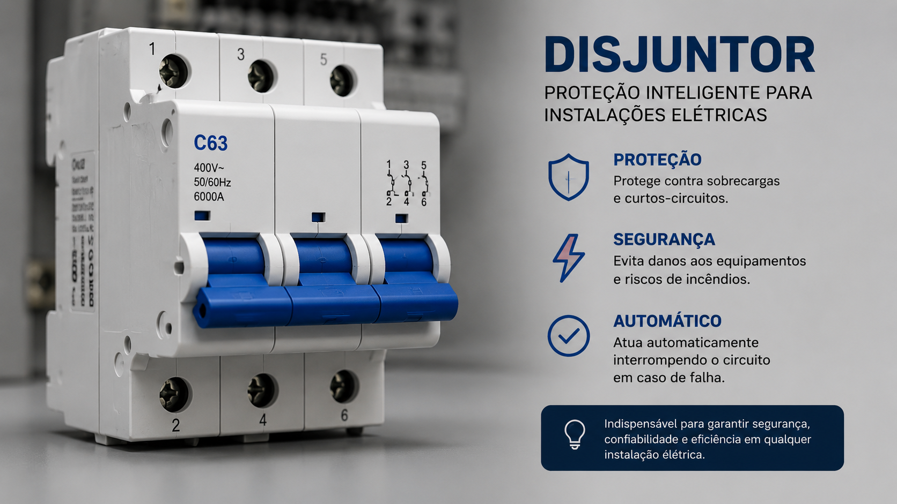

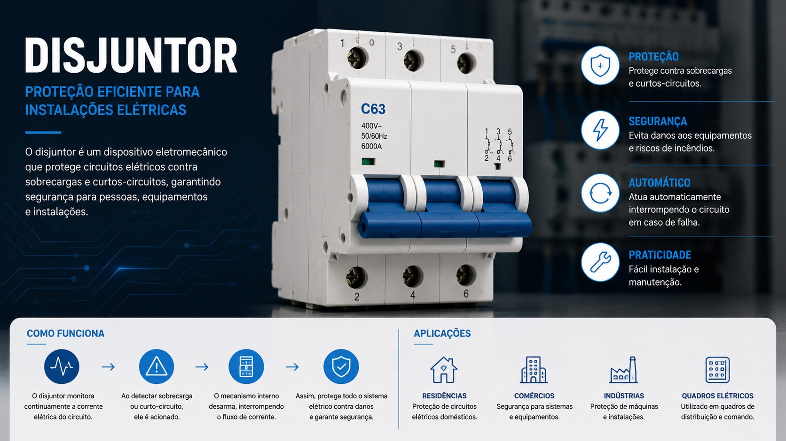
Conceito e Funcionamento
O disjuntor é um equipamento de proteção elétrica que monitora continuamente a corrente que percorre um circuito. Quando essa corrente ultrapassa os valores seguros — seja por sobrecarga gradual ou por um curto-circuito repentino — o dispositivo age automaticamente, abrindo o circuito e interrompendo o fornecimento de energia antes que danos ocorram.
- Proteção contra curto-circuito;
- Proteção contra sobrecarga de corrente;
- Possibilidade de desligamento manual;
- Aplicação em ambientes residenciais, comerciais e industriais.
Informações Complementares

Funcionamento
Ao detectar anomalia elétrica, o mecanismo bimetálico ou eletromagnético interno atua, desconectando o circuito de forma segura e precisa.
Saiba Mais
Aplicações
Presente em quadros de distribuição elétrica, painéis industriais e instalações prediais para garantir a segurança da rede elétrica.
Saiba Mais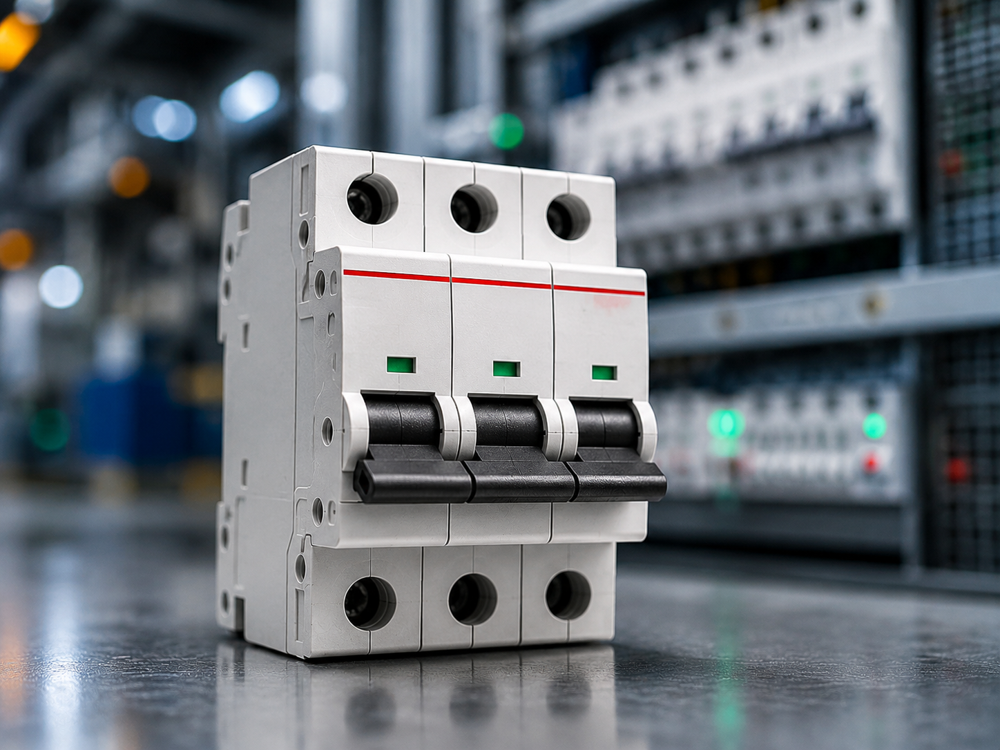
Vantagens
Diferente de fusíveis, o disjuntor pode ser rearmado após a atuação, eliminando a necessidade de substituição e reduzindo custos de manutenção.
Saiba MaisPrincipais Fabricantes
WEG, Siemens e Schneider Electric são referências mundiais na produção de disjuntores, oferecendo soluções confiáveis para proteção elétrica em todos os segmentos.
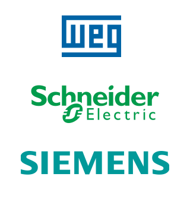
Contator
Dispositivo eletromecânico para acionamento e desligamento de cargas elétricas de potência.
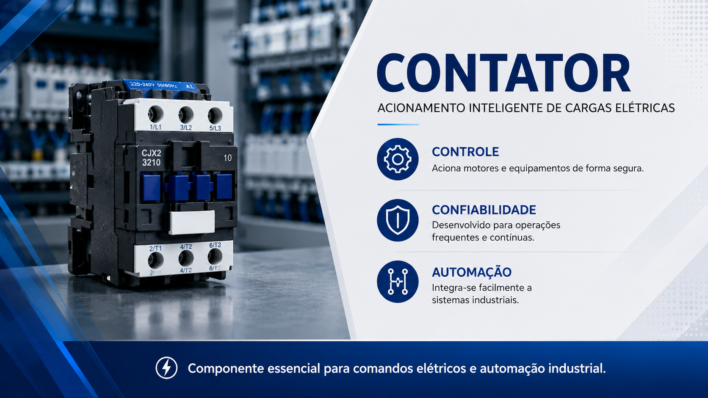

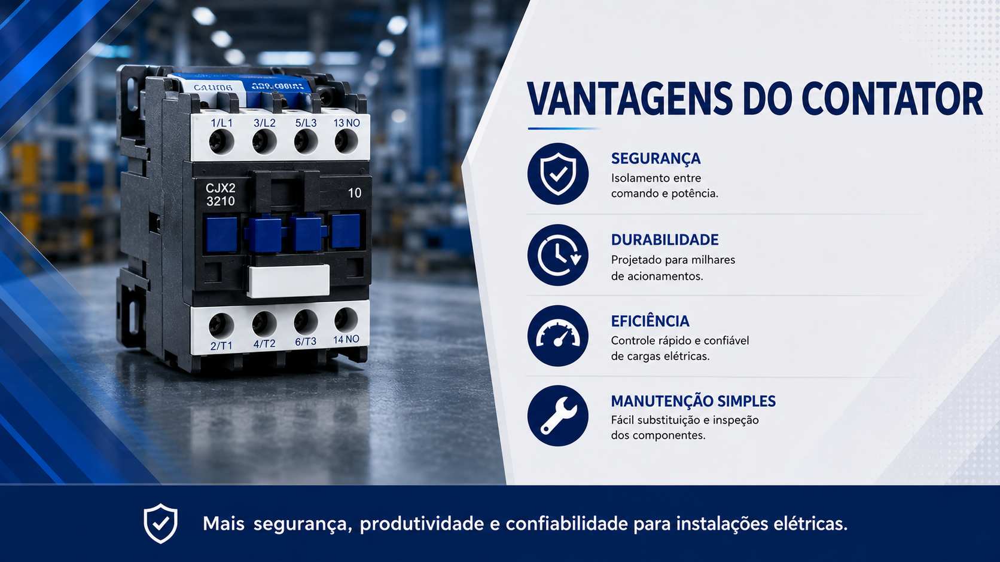
Conceito e Funcionamento
O contator é um dos componentes mais utilizados em painéis de comando elétrico e automação industrial. Ele funciona como um interruptor de alta potência acionado por um sinal elétrico de baixa tensão (bobina), que energiza um eletroímã e fecha os contatos principais, permitindo que grandes cargas — como motores — sejam ligadas e desligadas de forma segura e controlada remotamente.
- Acionamento de motores elétricos e bombas;
- Controle de cargas de alta corrente;
- Integração com circuitos de comando e proteção;
- Longa vida útil em operações frequentes.
Informações Complementares
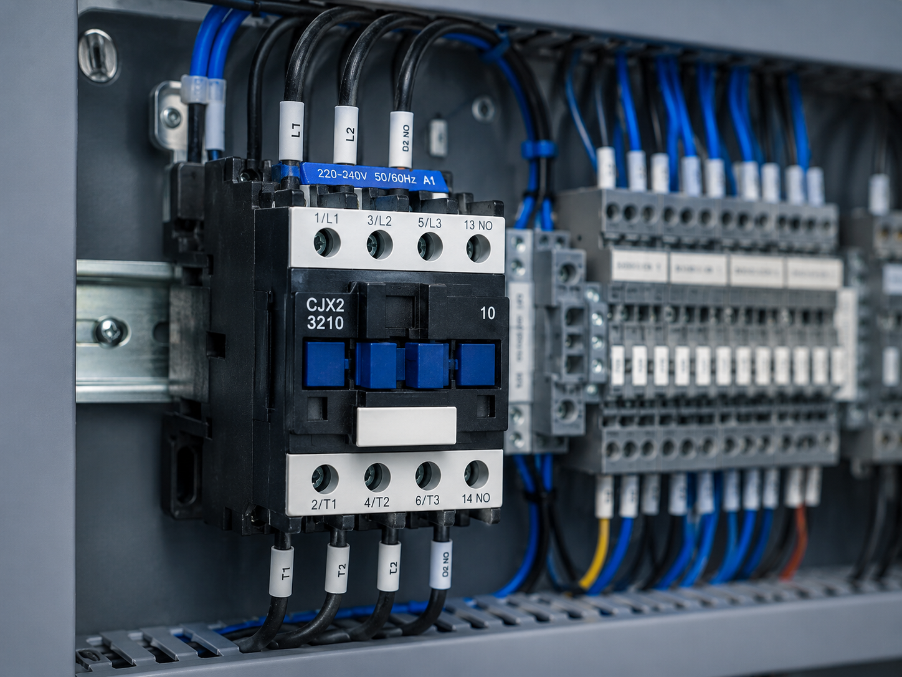
Funcionamento
Uma bobina eletromagnética recebe sinal de comando e fecha os contatos de potência, energizando a carga conectada com segurança.
Saiba Mais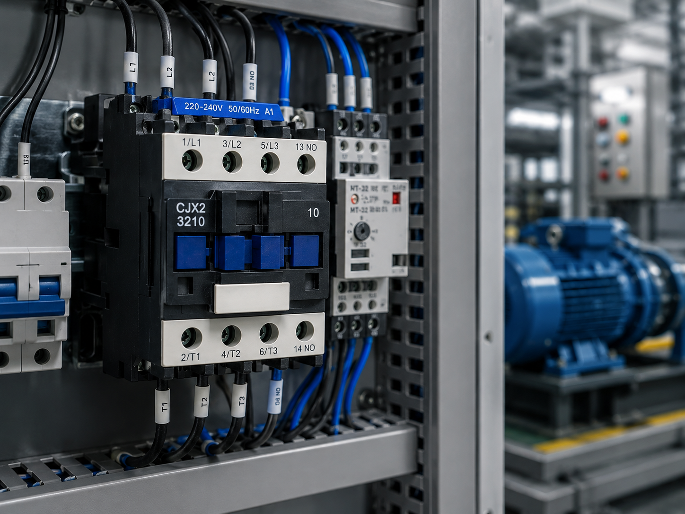
Aplicações
Amplamente usado no comando de motores elétricos, ventiladores, compressores, esteiras transportadoras e sistemas de aquecimento industrial.
Saiba Mais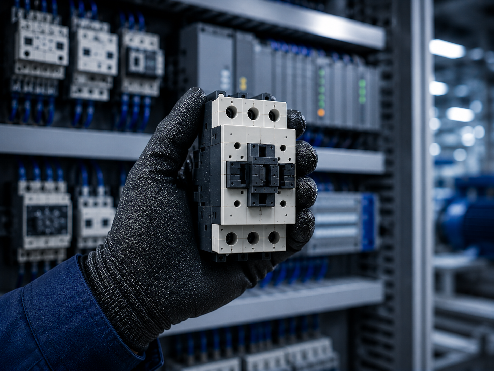
Vantagens
Proporciona isolamento elétrico entre o circuito de comando e o de potência, maior segurança operacional e elevada confiabilidade ao longo do tempo.
Saiba MaisPrincipais Fabricantes
Referências globais como WEG, Siemens e Schneider Electric oferecem linhas completas de contatores para aplicações industriais de todos os portes.
Botão de Pulso (Botoeira)
Dispositivo de comando manual que gera sinais momentâneos em circuitos de automação.
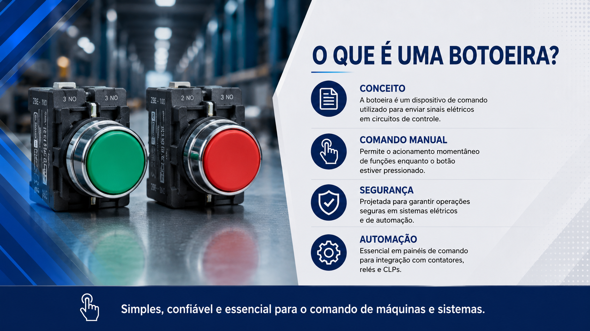

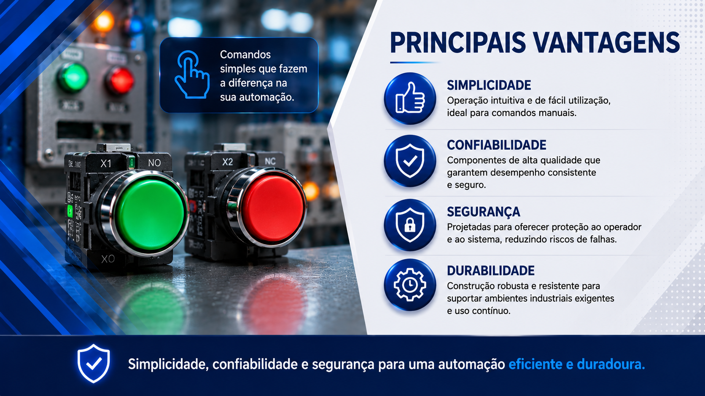
Conceito e Funcionamento
A botoeira, ou botão de pulso, é o principal elemento de comando manual em sistemas elétricos industriais. Ao ser pressionada, ela fecha (ou abre) temporariamente um contato elétrico — o sinal existe apenas enquanto o operador mantém o dedo sobre ela. Assim que solta, o contato retorna à posição original. Esse tipo de acionamento é ideal para partidas e paradas de motores, pois garante controle deliberado e evita acionamentos acidentais permanentes.
- Comando manual de máquinas e equipamentos;
- Acionamento de partidas e paradas de motores;
- Integração com circuitos de contator e CLP;
- Disponível em versões NA (Normalmente Aberto) e NF (Normalmente Fechado).
Informações Complementares
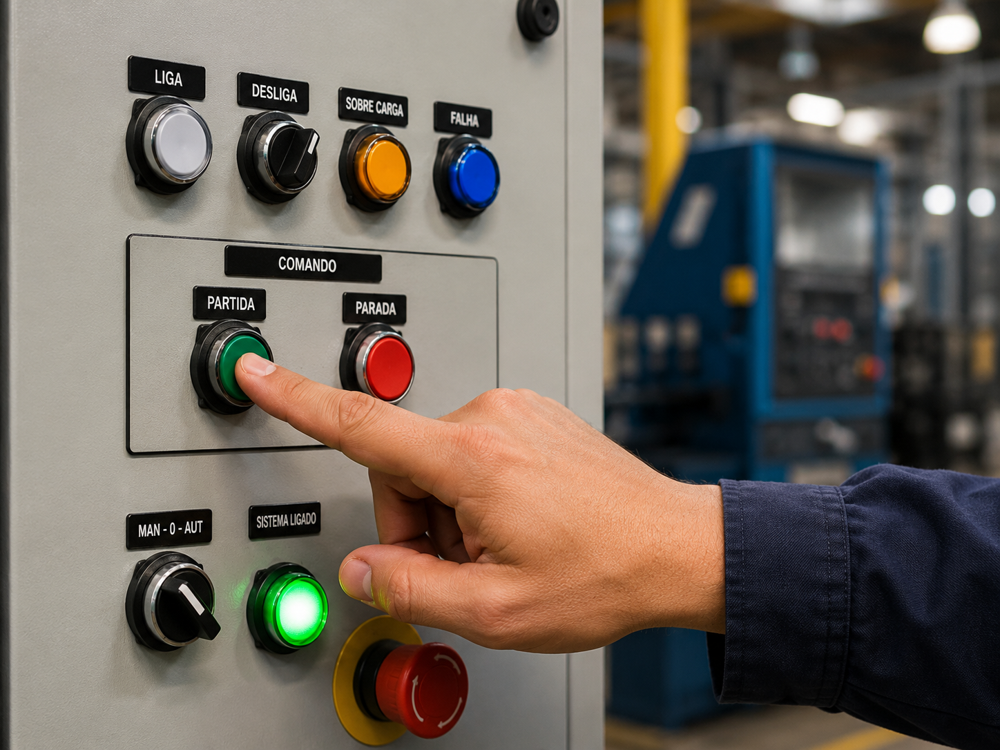
Funcionamento
Enquanto pressionado, fecha o contato elétrico enviando sinal ao circuito. Ao ser liberado, retorna automaticamente à posição original.
Saiba Mais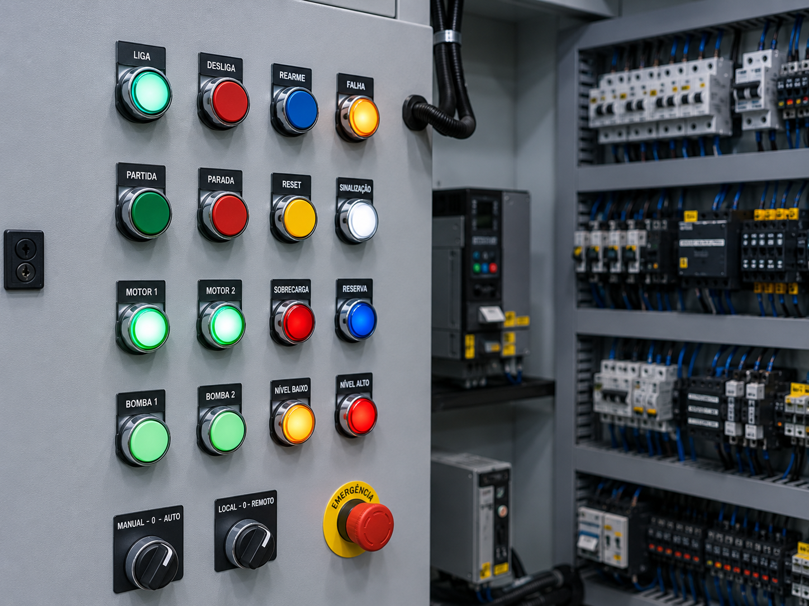
Aplicações
Utilizado em partidas de motores, paradas de emergência, acionamento de esteiras e controle de posicionamento em automação industrial.
Saiba Mais
Vantagens
Operação simples, resposta imediata ao toque, alta confiabilidade e fácil substituição em painéis de comando industrial.
Saiba MaisPrincipais Fabricantes
WEG, Siemens e Schneider Electric são fabricantes reconhecidos pela qualidade e variedade de botoeiras para uso industrial.
Chave Manopla
Seletor rotativo para controle e seleção de modos em sistemas elétricos e de automação.
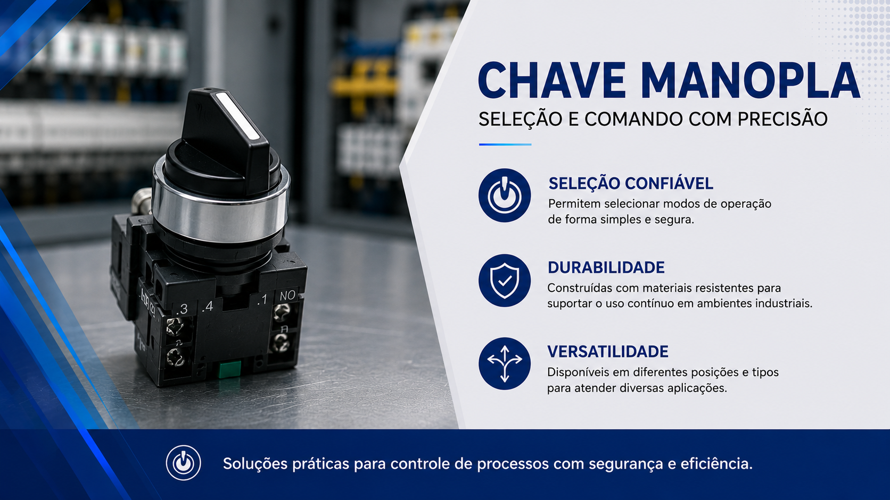

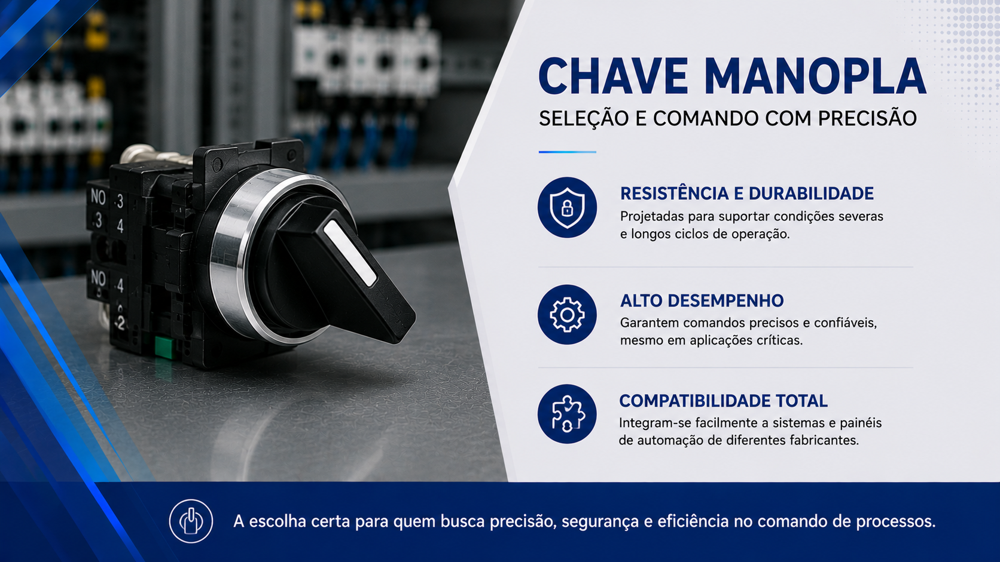
Conceito e Funcionamento
A chave manopla — também chamada de chave seletora ou de retenção — é um dispositivo de comando que mantém a posição escolhida pelo operador mesmo após soltar o comando. Ao contrário do botão de pulso, ela "trava" na posição selecionada, sendo ideal para escolher modos de operação como manual/automático, ligar/desligar definitivamente, ou selecionar diferentes funções em um painel elétrico industrial.
- Seleção de modos de operação (manual/automático);
- Comando de equipamentos com retenção de posição;
- Aplicação em painéis e quadros elétricos industriais;
- Disponível em 2 ou mais posições fixas.
Informações Complementares

Funcionamento
Ao girar a manopla para uma posição, os contatos internos mudam de estado e permanecem assim, mantendo o circuito correspondente ativo.
Saiba Mais
Aplicações
Usada em painéis de controle para alternar entre modos operacionais, como ligar/desligar equipamentos ou selecionar velocidades de motores.
Saiba Mais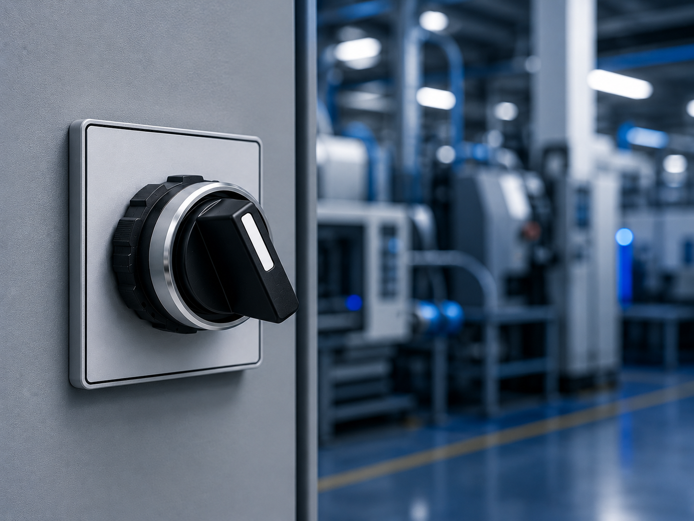
Vantagens
Retenção de posição evita acionamentos acidentais, oferece interface intuitiva e durabilidade elevada em ambientes industriais.
Saiba MaisPrincipais Fabricantes
Empresas como WEG, Siemens e Schneider Electric produzem chaves manopla com alto padrão de qualidade para aplicações industriais severas.
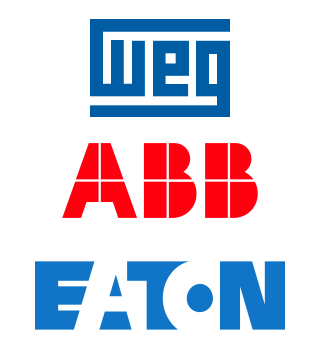
Sensor Fim de Curso
Sensor de posição que detecta o limite físico do movimento de máquinas e equipamentos.


Conceito e Funcionamento
O sensor fim de curso (ou limit switch) é um dispositivo eletromecânico que detecta quando uma parte móvel de uma máquina atingiu uma posição determinada. Ao contato físico — ou pela aproximação magnética, no caso dos modelos indutivos — o sensor muda o estado de seus contatos elétricos, enviando um sinal ao controlador do sistema. Esse sinal pode parar um motor, reverter um movimento ou acionar um alarme de segurança.
- Detecção de limites de movimento em esteiras e transportadores;
- Controle de posição em máquinas industriais;
- Acionamento de funções de segurança;
- Monitoramento de portas e tampos automáticos.
Informações Complementares
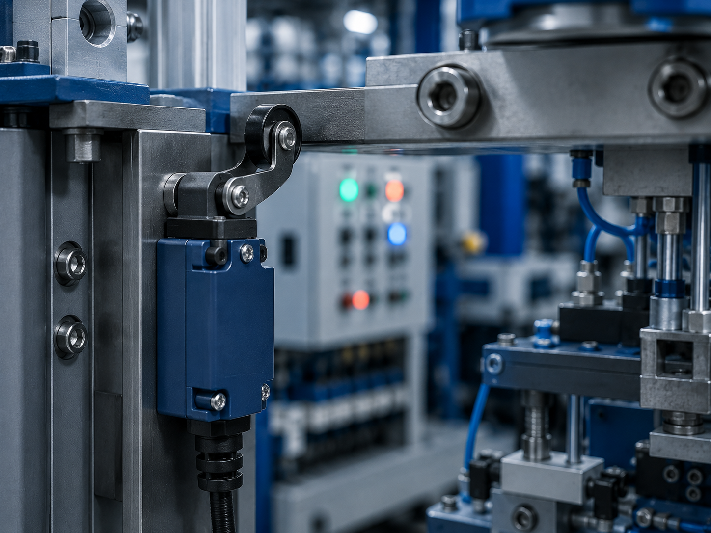
Funcionamento
O contato mecânico com o atuador do sensor altera o estado dos contatos elétricos, gerando o sinal de limite para o sistema de controle.
Saiba Mais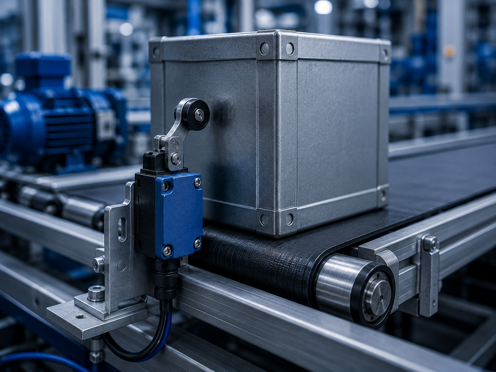
Aplicações
Presente em linhas de produção, robótica, máquinas CNC, portas automáticas e sistemas de posicionamento com alta precisão.
Saiba Mais
Vantagens
Custo acessível, resposta confiável, compatibilidade com CLPs e controladores industriais, e disponível em versões para ambientes agressivos.
Saiba MaisPrincipais Fabricantes
Fabricantes como WEG, Siemens, Schneider Electric e Omron são referências em sensores fim de curso para automação industrial.
Motor Elétrico Trifásico
Máquina que converte energia elétrica trifásica em energia mecânica rotativa.
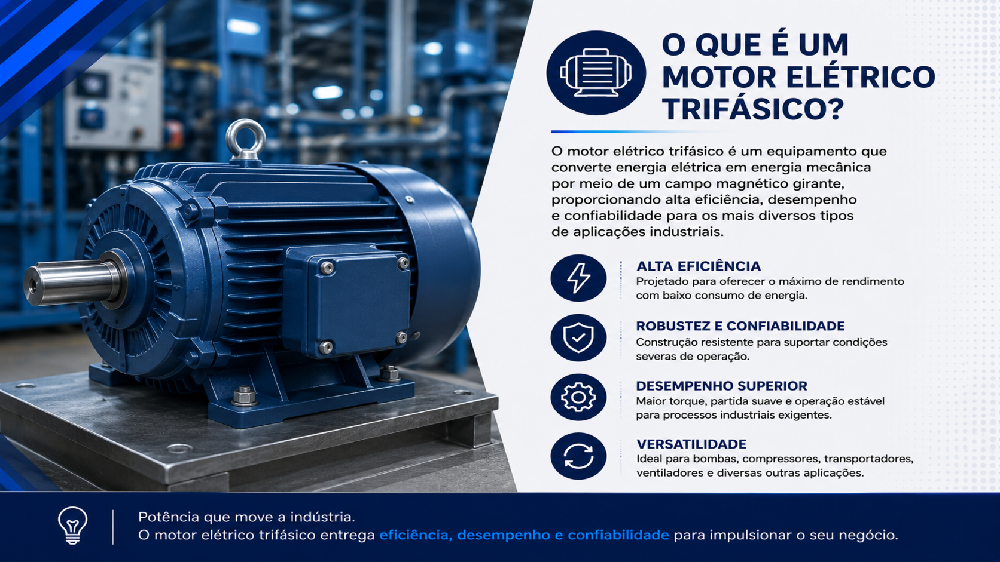

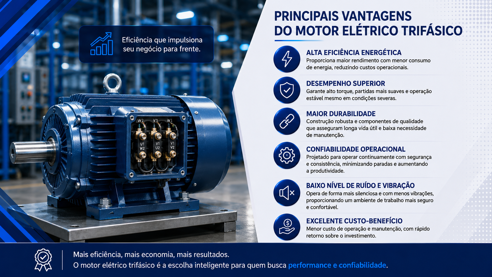
Conceito e Funcionamento
O motor elétrico trifásico de indução é o tipo de máquina mais utilizado na indústria. Ele opera com três fases de corrente alternada defasadas entre si em 120°, o que cria um campo magnético girante no estator. Esse campo induz correntes no rotor, gerando o torque que produz o movimento mecânico. Por não necessitar de escovas ou anéis coletores, o motor de indução é extremamente robusto, de baixa manutenção e altíssima confiabilidade.
- Converte energia elétrica em movimento mecânico rotativo;
- Aplicado em bombas, compressores e ventiladores industriais;
- Alta eficiência energética em operação contínua;
- Manutenção simples e longa vida útil.
Informações Complementares

Funcionamento
O campo magnético girante criado pelas três fases induz corrente no rotor, gerando força eletromagnética que resulta em torque e rotação.
Saiba Mais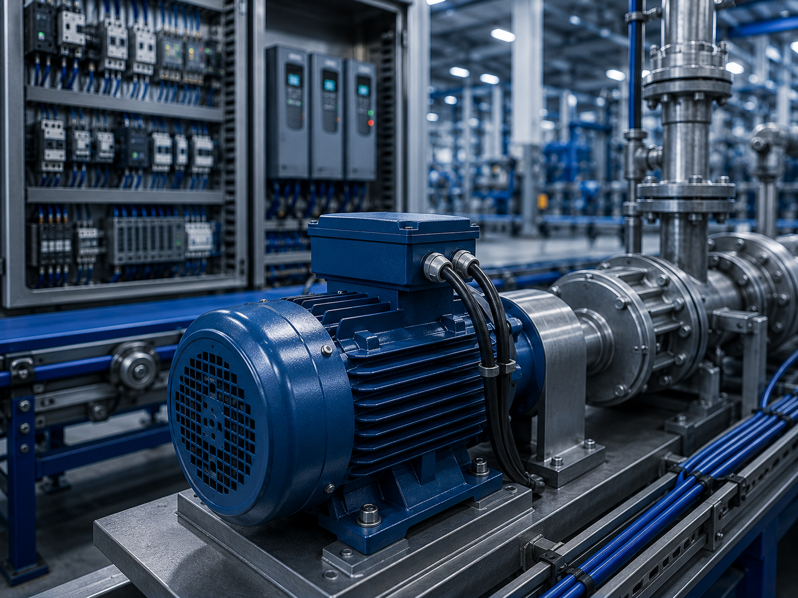
Aplicações
Presente em máquinas industriais, esteiras, agitadores, elevadores de carga, compressores e praticamente todo equipamento industrial com movimento.
Saiba Mais
Vantagens
Alto rendimento, robustez mecânica, operação silenciosa e compatibilidade com inversores de frequência para controle de velocidade.
Saiba MaisPrincipais Fabricantes
WEG se destaca como maior fabricante de motores elétricos da América Latina, ao lado de Siemens e Schneider Electric no mercado global.


Multímetro
Instrumento de medição elétrica que verifica tensão, corrente e resistência em um único aparelho.
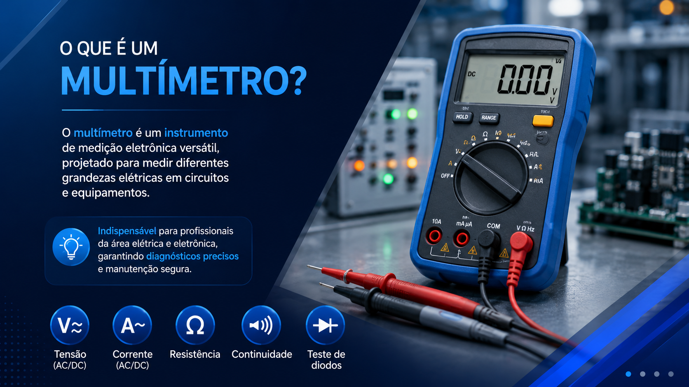
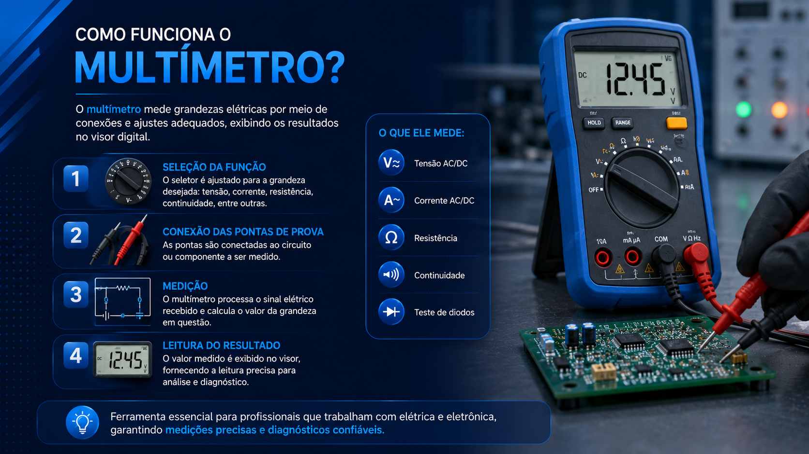

Conceito e Funcionamento
O multímetro é a ferramenta mais versátil do técnico eletricista. Com ele é possível medir grandezas fundamentais como tensão elétrica (V), corrente (A) e resistência (Ω) — e nos modelos mais avançados, também capacitância, frequência e temperatura. O operador seleciona a grandeza desejada no seletor rotativo, conecta as ponteiras de teste ao circuito e lê o valor exibido no display. A ponteira vermelha vai ao terminal positivo e a preta ao terminal COM (negativo).
- Medição de tensão AC e DC;
- Medição de corrente elétrica;
- Medição de resistência e continuidade;
- Diagnóstico de falhas em circuitos industriais e eletrônicos.
Informações Complementares
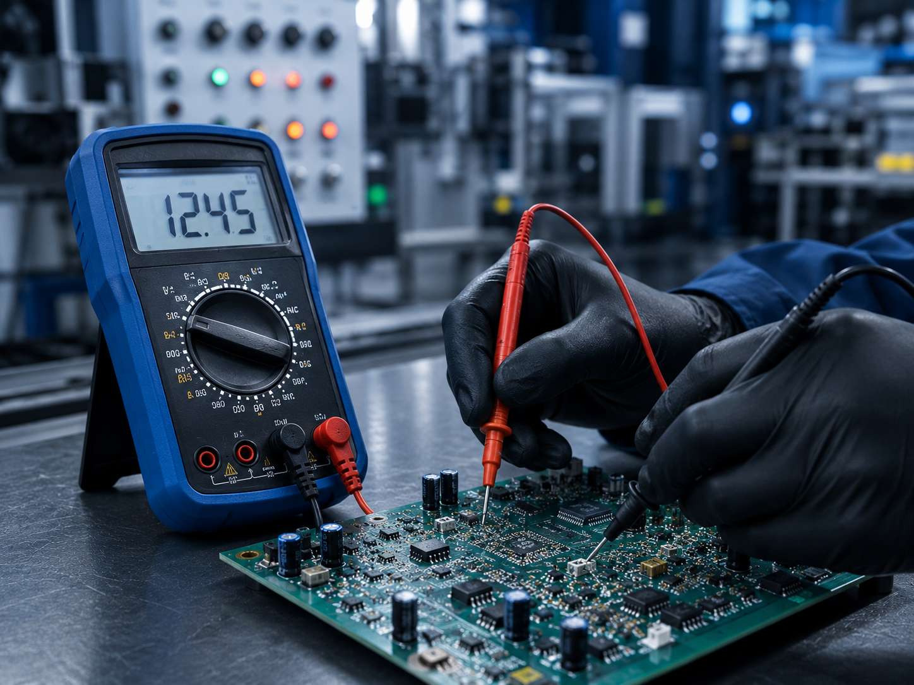
Funcionamento
Circuitos internos especializados convertem as grandezas elétricas em sinais legíveis no display analógico ou digital do aparelho.
Saiba Mais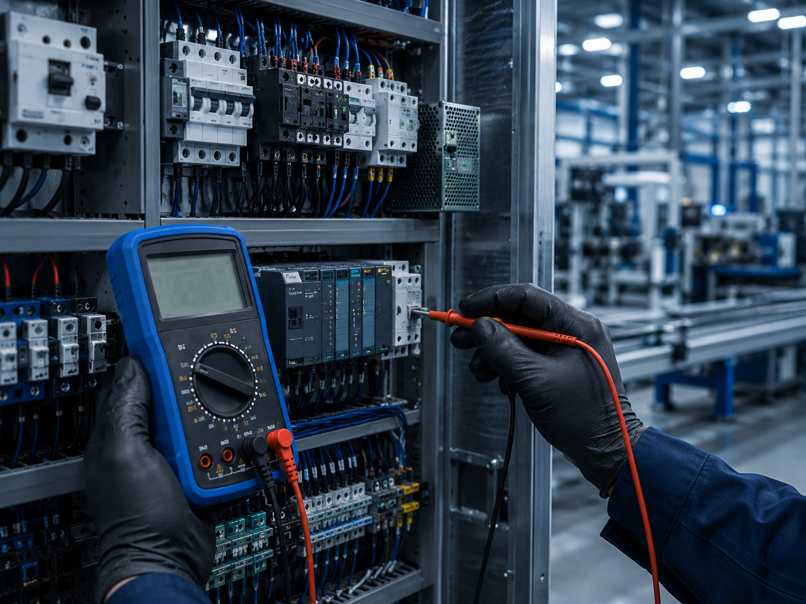
Aplicações
Essencial em manutenção elétrica, instalações industriais, eletrônica, bancadas de teste e diagnósticos de equipamentos.
Saiba Mais
Vantagens
Reúne múltiplas funções de medição em um único instrumento portátil, economizando tempo e recursos no diagnóstico de sistemas elétricos.
Saiba MaisPrincipais Fabricantes
Fluke, Minipa e UNI-T são marcas de referência no segmento de multímetros, com modelos para uso profissional e técnico nas mais diversas aplicações.
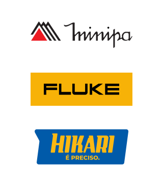
Relé Temporizador
Dispositivo que controla o acionamento de circuitos elétricos com base em intervalos de tempo programados.

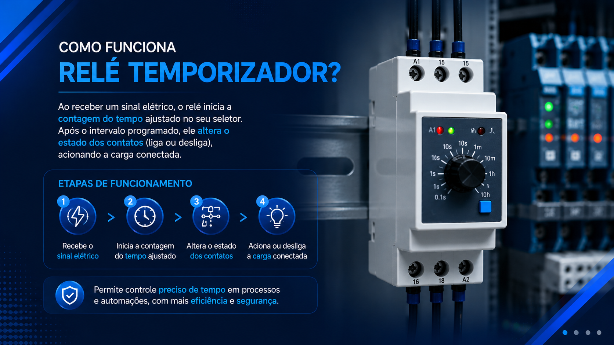
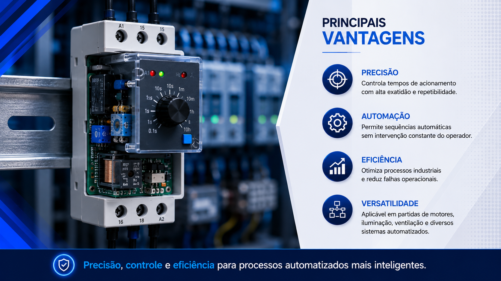
Conceito e Funcionamento
O relé temporizador é um componente que introduz o conceito de tempo nos sistemas de automação. Após receber um sinal de ativação, ele aguarda um intervalo pré-configurado antes de acionar ou desacionar seus contatos de saída. Pode funcionar com temporização na energização (on-delay), na desenergização (off-delay) ou em modo intermitente (piscante). É fundamental em sequências automáticas de máquinas onde etapas precisam ocorrer em momentos específicos.
- Controle de tempo em sequências automáticas;
- Partida temporizada de motores;
- Controle de processos industriais com intervalos definidos;
- Integração com CLPs e sistemas de comando.
Informações Complementares

Funcionamento
Ao ser acionado, o temporizador conta o intervalo configurado e então comuta seus contatos, desencadeando a próxima etapa do processo.
Saiba Mais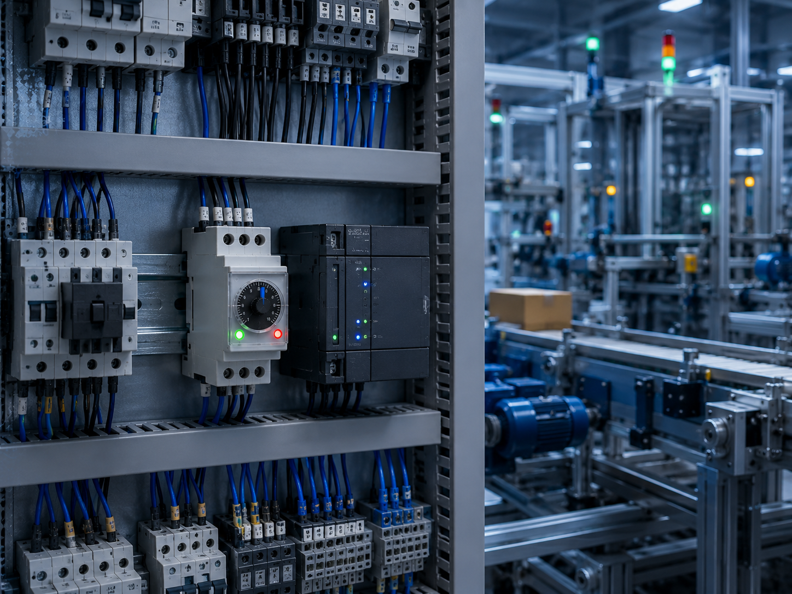
Aplicações
Utilizado em partidas estrela-triângulo de motores, controle de iluminação, processos de aquecimento e sistemas de ventilação temporizada.
Saiba Mais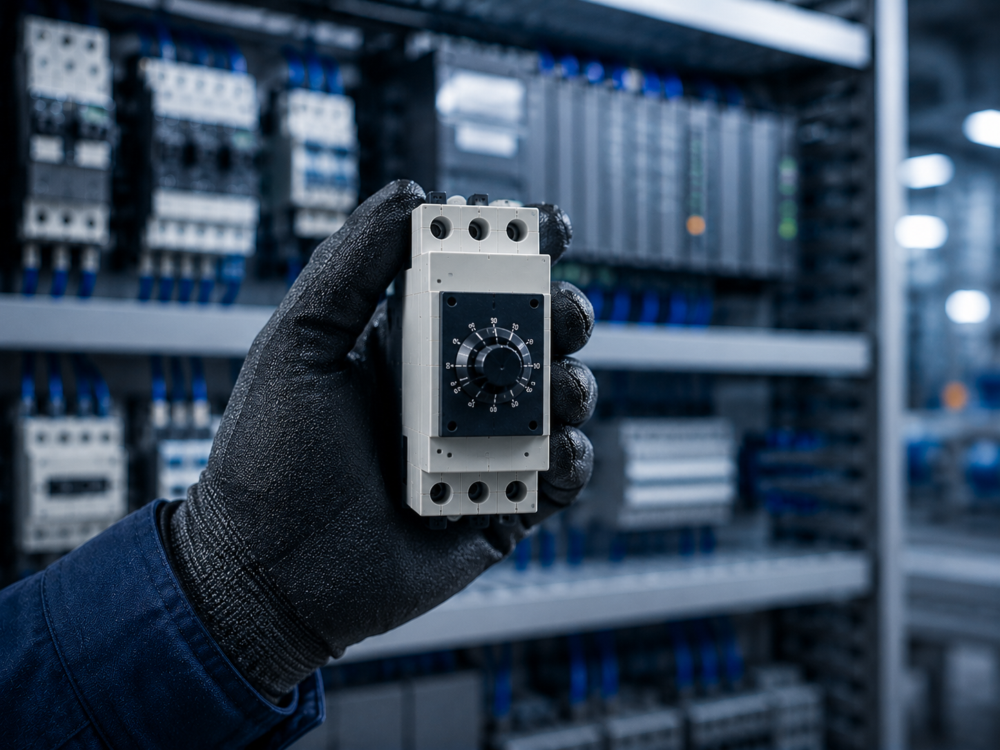
Vantagens
Automatiza etapas com precisão temporal, reduz a necessidade de intervenção humana e aumenta a eficiência dos processos industriais.
Saiba MaisDisjuntor Motor
Protetor termomagnético desenvolvido especificamente para motores elétricos industriais.
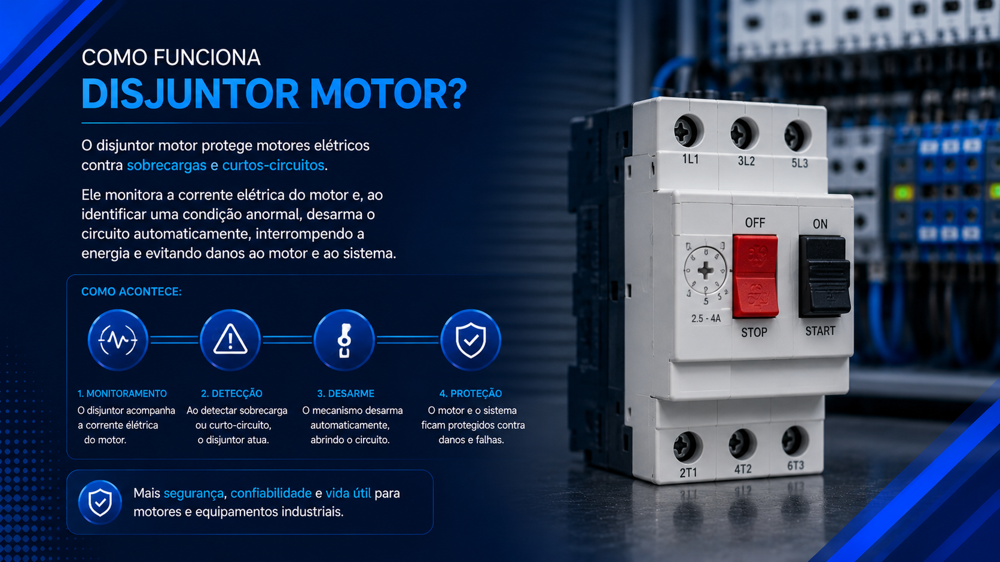


Conceito e Funcionamento
O disjuntor motor é uma versão especializada do disjuntor convencional, projetada para atender às características específicas de motores elétricos — como a alta corrente de partida (que pode ser 5 a 7 vezes a corrente nominal). Ele combina proteção contra sobrecarga (proteção térmica), proteção contra curto-circuito (proteção magnética) e a capacidade de ser utilizado também como dispositivo de acionamento manual do motor, tudo em um único componente compacto.
- Proteção térmica e magnética integradas;
- Ajuste de corrente calibrado para o motor;
- Função de acionamento manual incorporada;
- Indicação visual de trip por sobrecarga ou curto.
Informações Complementares

Funcionamento
Monitora a corrente do motor continuamente, atuando termicamente em sobrecargas e eletromagneticamente em curtos-circuitos.
Saiba Mais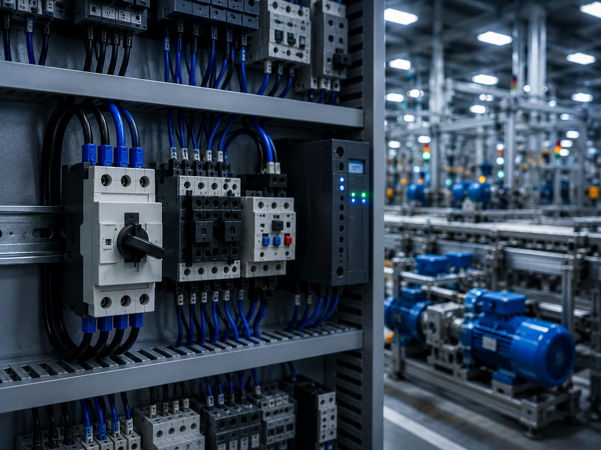
Aplicações
Ideal para proteção de motores em bombas, compressores, ventiladores e transportadores industriais de médio e grande porte.
Saiba Mais
Vantagens
Une em um componente as funções de proteção e acionamento, simplificando o projeto do painel e reduzindo custos de instalação.
Saiba MaisPrincipais Fabricantes
WEG, Siemens e Schneider Electric são referências na produção de disjuntores motor para aplicações industriais de alta exigência.

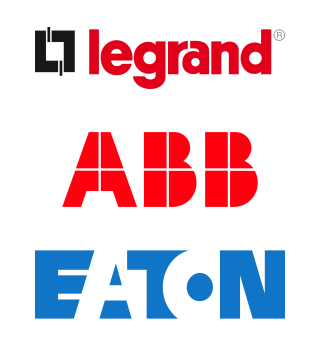
Relé Térmico
Dispositivo de proteção que salvaguarda motores elétricos contra sobreaquecimento por sobrecarga.


Conceito e Funcionamento
O relé térmico protege motores elétricos contra o superaquecimento causado por sobrecarga prolongada. Seu funcionamento baseia-se em uma lâmina bimetálica — formada por dois metais com diferentes coeficientes de dilatação — que se curva quando aquecida pela passagem de corrente excessiva. Quando a curvatura atinge o limite, ela aciona um mecanismo de disparo que abre o circuito de comando do contator, desligando o motor antes que ocorra dano permanente ao enrolamento.
- Proteção contra sobrecarga prolongada em motores;
- Ajuste de corrente de atuação configurável;
- Rearme manual ou automático após resfriamento;
- Conectado em série ao circuito de potência do motor.
Informações Complementares
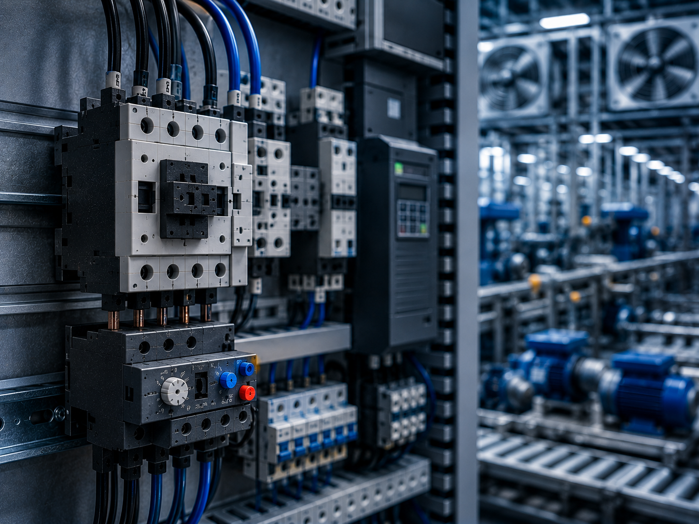
Funcionamento
A lâmina bimetálica se deforma com o calor gerado pela sobrecorrente e aciona mecanicamente o contato de disparo do relé.
Saiba Mais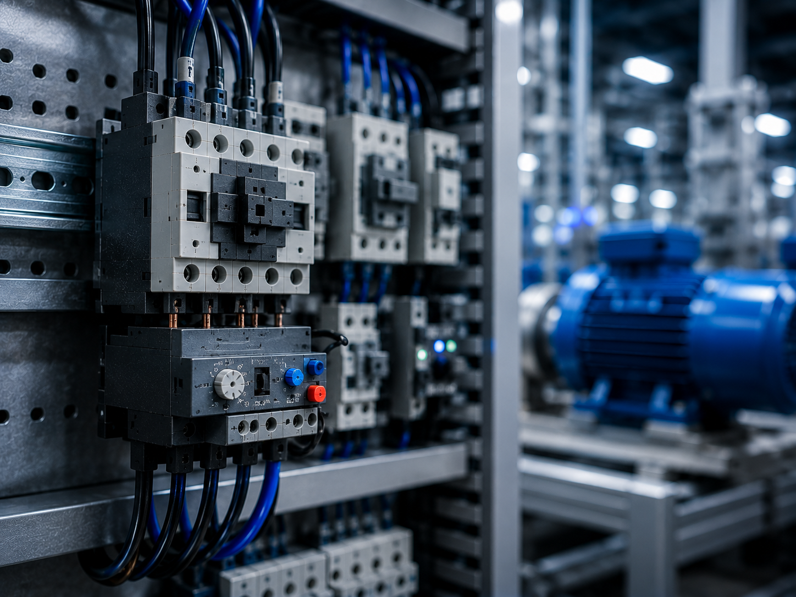
Aplicações
Usado em conjunto com contatores para proteger motores de bombas, ventiladores, compressores e esteiras contra operação sobrecarregada.
Saiba Mais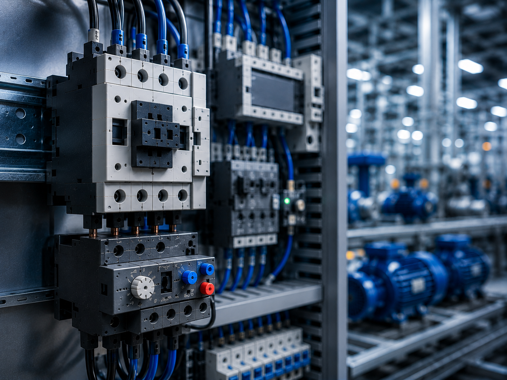
Vantagens
Custo acessível, fácil ajuste da corrente de disparo, compatibilidade com contatores e efetividade comprovada na proteção de motores.
Saiba MaisPrincipais Fabricantes
WEG, Siemens e Schneider Electric oferecem linhas completas de relés térmicos compatíveis com seus respectivos contatores e disjuntores.
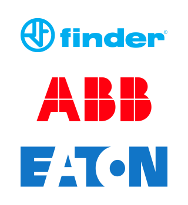